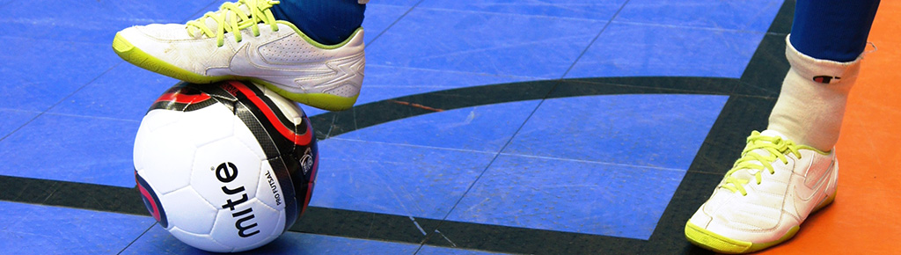

Un jugador expulsado antes del saque de salida sólo podrá ser reemplazado por uno de los sustitutos designados.
Un sustituto designado, expulsado antes del saque de salida o después del comienzo del partido, no podrá ser sustituido.
Un sustituto podrá sustituir a un jugador expulsado y entrar en la superficie de juego una vez transcurridos dos minutos de juego efectivos después de la expulsión,siempre que cuente con la autorización del cronometrador o el tercer árbitro (árbitros asistentes), salvo si se marca un gol antes de que transcurran dos minutos, en cuyo caso, se aplicarán las siguientes disposiciones:
La superficie de juego será rectangular y estará marcada con líneas. Dichas líneas pertenecerán a las zonas que demarcan y deberán diferenciarse claramente del color de la superficie de juego.
Las dos líneas de marcación más largas se denominarán líneas de banda. Las dos más cortas se llamarán líneas de meta.
La superfi cie de juego estará dividida en dos mitades por una línea media, que unirá los dos puntos medios de las dos líneas de banda.
El centro de la superfi cie de juego estará marcado con un punto en la mitad de la línea media, alrededor del cual se trazará un círculo con un radio de 3 m.
Se deberá hacer una marca fuera de la superfi cie de juego, a 5 m de cada área de esquina y perpendicular a la línea de meta, para señalar la distancia que deberá observarse en la ejecución de un saque de esquina. La anchura de la marca será de 8 cm.
Se deberán hacer dos marcas adicionales en la superfi cie de juego, a 5 m del segundo punto penal, a izquierda y derecha, para señalar la distancia mínima que deberá observarse en la ejecución de un tiro desde el segundo punto penal.
La anchura de la marca será de 8 cm.
Si el balón explota o se daña mientras está en juego, se interrumpirá el juego:
Si el balón explota o se daña en un momento en que no se halla en juego (saque de salida, saque de meta, saque de esquina, balón al suelo, tiro libre, tiro penal o saque de banda):